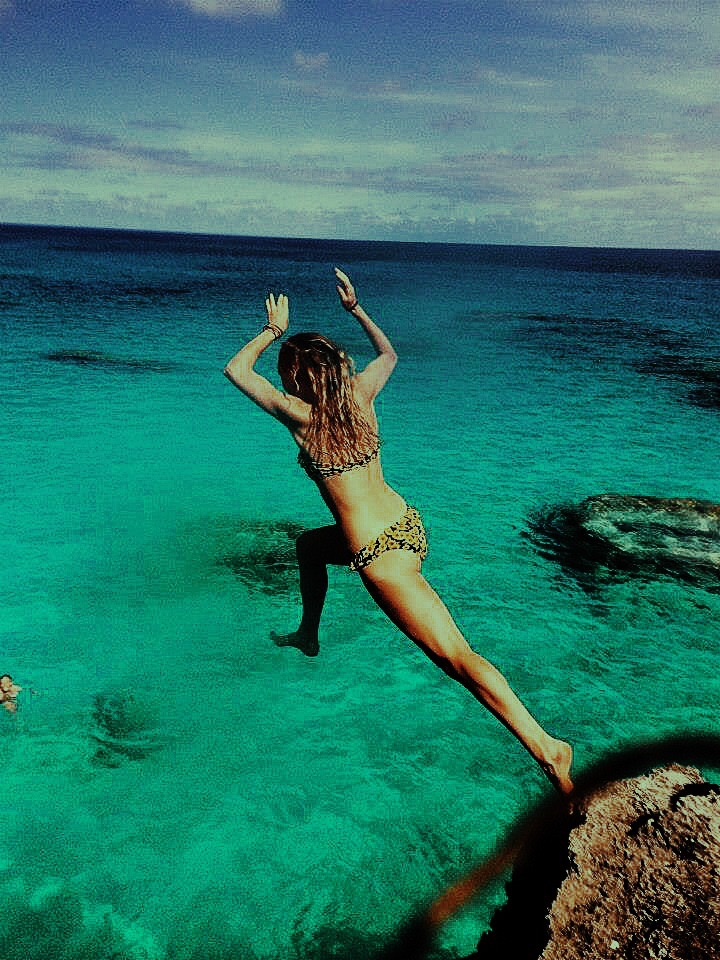
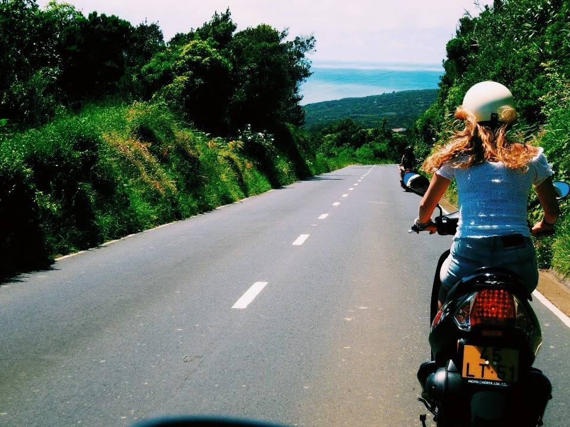
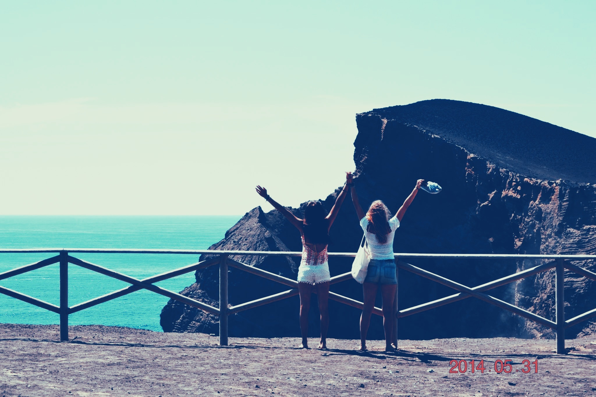
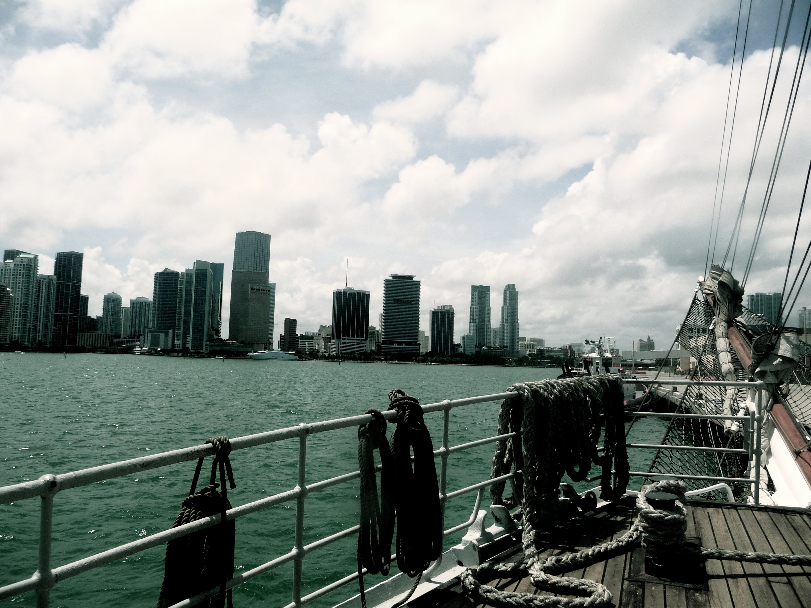
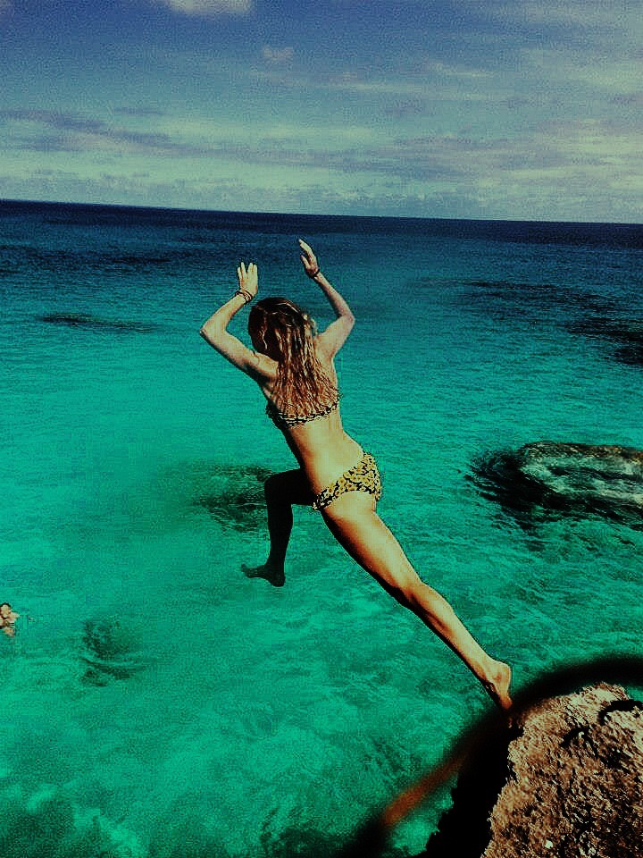
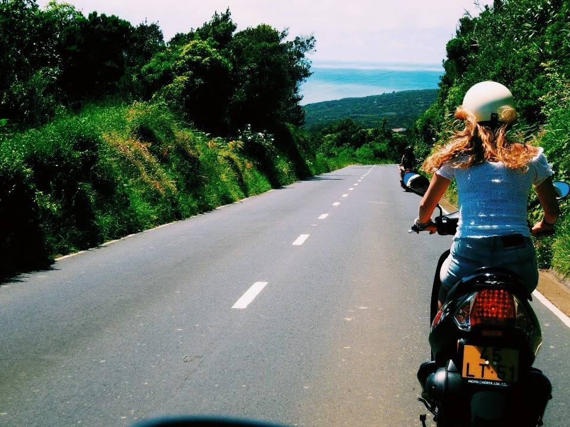
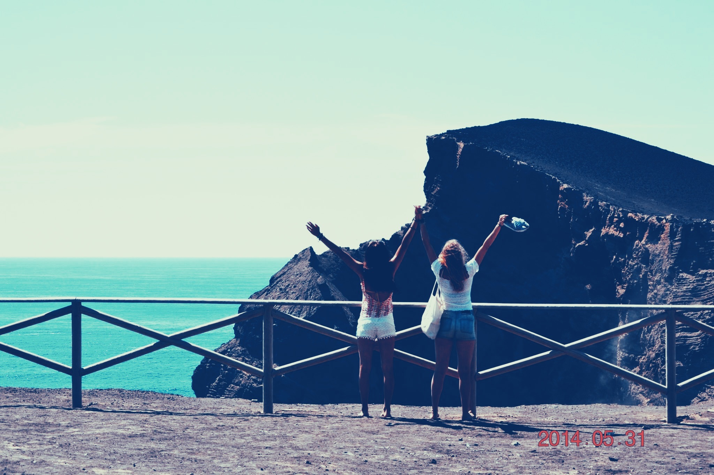
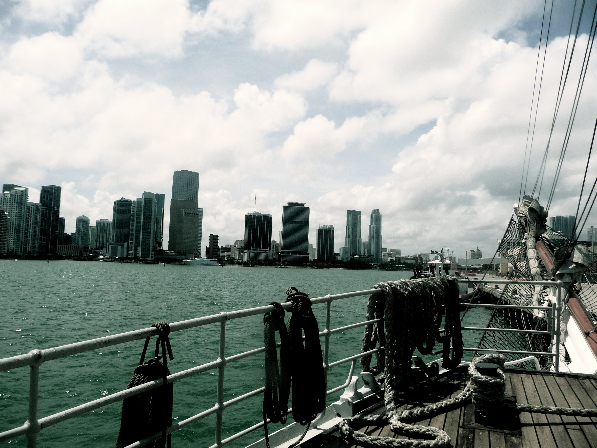

Se fler av mina bilder
Här är ett urklipp ur min resedagbok från min resa över Atlanten men T/S Gunilla
De trettio grader varma hytterna gör att djupsömnen aldrig riktigt vill infinna sig, så när Emil purrade(väckte) mig sjönk jag sakta ut ur drömmarnas värld. Ni vet hur det är, man kan inte riktigt urskilja vad som är verklighet och vad som är dröm...Så när Emil började prata om aligatorer visste jag inte riktigt vad jag skulle tro. Men när jag inser att det som annars skulle ha hört till drömmarnas värld faktiskt hör till dagens verklighet kan jag inte låta bli att le. Frukos förtärdes, matlådor packades ner och solkräm smörjdes in medan Miami vaknade till liv. Busstur med sightseeing och promenad stopp i little Havanna inledde förmiddagen. Efter någon timme var det aligatorernas tur, alla vi 40 elever klev i tre svävare och åkte iväg för att se både aligatorer, sköldpaddor och färggranna fåglar.
Tillbaka på båten som en utav oss vakthavande var det städning som gällde. I ett fruktansvärt tempo torkades skott, toaletter och duschar av för att sedan få ett godkännande av vår vaktledare Dag. Efter det tog vi bottenprover för att kunna analysera när vi är tillbaka i skolan i höst, sedan var vi lediga. Vi satte oss nere i mässen för att spela lite kort men efter ett tag tröttnade vi och Ina knäckte den briljanta idén att klättra i riggen för nöjes skull. Vi pratade med Dag och sedan gav vi oss upp. Jag måste nog erkänna att mina ben darrade och hjärtat pulserade ganska rejält. När jag bara hade det läskigaste partiet i klättringen kvar kikade Lucas ner från bramen(det näst högsta råt) och gav mig lite mod. När jag satte mig bredvid Lucas på bramen bredde staden ut sig nedanför oss. Hur man ska kunna leva på något annat sätt än detta är i en sådan stund helt otänkbart. Lucas och jag satt där uppe och pratade länge innan vi tillslut beslöt oss för att klättra ner. Det råkar vara så att det inte bara är jag som är höjdrädd, det är Lucas också. Det jag inte visste var att Lucas har ett knep han tar till när han blir skraj, han sjunger en speciell sång. Så medan jag satt kvar någon minut extra och tittade ut över stadens alla ljus klättrade Lucas sjungandes ner steg för steg.
Det är just dessa ögonblick som får mig att komma in i ett lugn som jag bara har känt här på Gunilla. Man inser att saker man annars tycker spelar så stor roll inte påverkar mig överhuvud taget. Att jag ska få leva i detta lugnet i 10 veckor, det får mig att bli så otroligt lycklig. Jag blir tacksam över att lilla jag får uppleva allt detta tillsammans med mina vänner. Att jag inte behöver sitta själv och titta över Miamis skyline, utan har en sjungandes liten Lucas bredvid mig. Att jag faktiskt får lov att äta pannbiff, lingonsylt och potatis till middag mitt i Miami och att jag får spendera en kväll med att läsa en bok i lugn och ro i hängmattan.